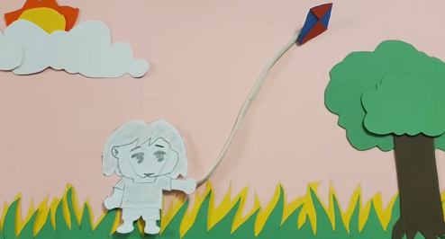

I really enjoy making videos and I'm currently working a post-production video editor for the ScreenCrush YouTube channel. Here you can find videos that I made myself and some ScreenCrush videos that I helped edit.
A stop-motion animation I created using construction paper cut-outs.
A video I edited for ScreenCrush about why Kevin Conroy, the voice of Batman from Batman: The Animated Series, is the best iteration of the character.
A title sequence I made for the Studio Ghibli film, Princess Mononoke.
A video I helped edit for ScreenCrush discussing deleted scenes and other new content found in the home release of Doctor Strange in the Multiverse of Madness.